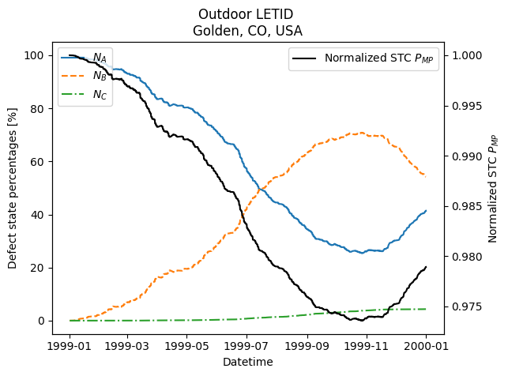

# # LETID Outdoor
#
# This is an example on how to model LETID progression in outdoor environments
#
# We can use the equations in this library to model LETID progression in a simulated outdoor environment, given that we have weather and system data. This example makes use of tools from the fabulous [pvlib](https://pvlib-python.readthedocs.io/en/stable/) library to calculate system irradiance and temperature, which we use to calculate progression in LETID states.
#
# This will illustrate the potential of "Temporary Recovery", i.e., the backwards transition of the LETID defect B->A that can take place with carrier injection at lower temperatures.
#
#
# **Requirements:**
# - `pvlib`, `pandas`, `numpy`, `matplotlib`
#
# **Objectives:**
# 1. Use `pvlib` and provided weather files to set up a temperature and injection timeseries
# 2. Define necessary solar cell device parameters
# 3. Define necessary degradation parameters: degraded lifetime and defect states
# 4. Run through timeseries, calculating defect states
# 5. Calculate device degradation and plot
# if running on google colab, uncomment the next line and execute this cell to install the dependencies and prevent "ModuleNotFoundError" in later cells:
!pip install pvdeg
Requirement already satisfied: pvdeg in /opt/hostedtoolcache/Python/3.11.15/x64/lib/python3.11/site-packages (0.1.dev1+g5b9c72c94)
Requirement already satisfied: aiohttp==3.13.4 in /opt/hostedtoolcache/Python/3.11.15/x64/lib/python3.11/site-packages (from pvdeg) (3.13.4)
Requirement already satisfied: numpy>=1.19.3 in /opt/hostedtoolcache/Python/3.11.15/x64/lib/python3.11/site-packages (from pvdeg) (2.4.4)
Requirement already satisfied: pvlib>=0.12.0 in /opt/hostedtoolcache/Python/3.11.15/x64/lib/python3.11/site-packages (from pvdeg) (0.15.0)
Requirement already satisfied: scipy>1.6.0 in /opt/hostedtoolcache/Python/3.11.15/x64/lib/python3.11/site-packages (from pvdeg) (1.17.1)
Requirement already satisfied: NLR-rex in /opt/hostedtoolcache/Python/3.11.15/x64/lib/python3.11/site-packages (from pvdeg) (0.5.0)
Requirement already satisfied: cartopy in /opt/hostedtoolcache/Python/3.11.15/x64/lib/python3.11/site-packages (from pvdeg) (0.25.0)
Requirement already satisfied: dask[dataframe] in /opt/hostedtoolcache/Python/3.11.15/x64/lib/python3.11/site-packages (from pvdeg) (2026.3.0)
Requirement already satisfied: dask-jobqueue in /opt/hostedtoolcache/Python/3.11.15/x64/lib/python3.11/site-packages (from pvdeg) (0.9.0)
Requirement already satisfied: bokeh in /opt/hostedtoolcache/Python/3.11.15/x64/lib/python3.11/site-packages (from pvdeg) (3.9.0)
Requirement already satisfied: geopy in /opt/hostedtoolcache/Python/3.11.15/x64/lib/python3.11/site-packages (from pvdeg) (2.4.1)
Requirement already satisfied: h5netcdf in /opt/hostedtoolcache/Python/3.11.15/x64/lib/python3.11/site-packages (from pvdeg) (1.8.1)
Requirement already satisfied: h5py<=3.14.0 in /opt/hostedtoolcache/Python/3.11.15/x64/lib/python3.11/site-packages (from pvdeg) (3.14.0)
Requirement already satisfied: jupyterlab in /opt/hostedtoolcache/Python/3.11.15/x64/lib/python3.11/site-packages (from pvdeg) (4.5.6)
Requirement already satisfied: matplotlib in /opt/hostedtoolcache/Python/3.11.15/x64/lib/python3.11/site-packages (from pvdeg) (3.10.8)
Requirement already satisfied: netCDF4 in /opt/hostedtoolcache/Python/3.11.15/x64/lib/python3.11/site-packages (from pvdeg) (1.7.4)
Requirement already satisfied: notebook in /opt/hostedtoolcache/Python/3.11.15/x64/lib/python3.11/site-packages (from pvdeg) (7.5.5)
Requirement already satisfied: numba in /opt/hostedtoolcache/Python/3.11.15/x64/lib/python3.11/site-packages (from pvdeg) (0.65.0)
Requirement already satisfied: openpyxl in /opt/hostedtoolcache/Python/3.11.15/x64/lib/python3.11/site-packages (from pvdeg) (3.1.5)
Requirement already satisfied: pandas in /opt/hostedtoolcache/Python/3.11.15/x64/lib/python3.11/site-packages (from pvdeg) (2.3.3)
Requirement already satisfied: photovoltaic in /opt/hostedtoolcache/Python/3.11.15/x64/lib/python3.11/site-packages (from pvdeg) (0.1.9)
Requirement already satisfied: python-dateutil in /opt/hostedtoolcache/Python/3.11.15/x64/lib/python3.11/site-packages (from pvdeg) (2.9.0.post0)
Requirement already satisfied: pytz in /opt/hostedtoolcache/Python/3.11.15/x64/lib/python3.11/site-packages (from pvdeg) (2026.1.post1)
Requirement already satisfied: seaborn in /opt/hostedtoolcache/Python/3.11.15/x64/lib/python3.11/site-packages (from pvdeg) (0.13.2)
Requirement already satisfied: tables in /opt/hostedtoolcache/Python/3.11.15/x64/lib/python3.11/site-packages (from pvdeg) (3.11.1)
Requirement already satisfied: tqdm in /opt/hostedtoolcache/Python/3.11.15/x64/lib/python3.11/site-packages (from pvdeg) (4.67.3)
Requirement already satisfied: xarray in /opt/hostedtoolcache/Python/3.11.15/x64/lib/python3.11/site-packages (from pvdeg) (2026.2.0)
Requirement already satisfied: pre-commit in /opt/hostedtoolcache/Python/3.11.15/x64/lib/python3.11/site-packages (from pvdeg) (4.5.1)
Requirement already satisfied: sympy in /opt/hostedtoolcache/Python/3.11.15/x64/lib/python3.11/site-packages (from pvdeg) (1.14.0)
Requirement already satisfied: zarr in /opt/hostedtoolcache/Python/3.11.15/x64/lib/python3.11/site-packages (from pvdeg) (3.1.6)
Requirement already satisfied: jupytext in /opt/hostedtoolcache/Python/3.11.15/x64/lib/python3.11/site-packages (from pvdeg) (1.19.1)
Requirement already satisfied: aiohappyeyeballs>=2.5.0 in /opt/hostedtoolcache/Python/3.11.15/x64/lib/python3.11/site-packages (from aiohttp==3.13.4->pvdeg) (2.6.1)
Requirement already satisfied: aiosignal>=1.4.0 in /opt/hostedtoolcache/Python/3.11.15/x64/lib/python3.11/site-packages (from aiohttp==3.13.4->pvdeg) (1.4.0)
Requirement already satisfied: attrs>=17.3.0 in /opt/hostedtoolcache/Python/3.11.15/x64/lib/python3.11/site-packages (from aiohttp==3.13.4->pvdeg) (26.1.0)
Requirement already satisfied: frozenlist>=1.1.1 in /opt/hostedtoolcache/Python/3.11.15/x64/lib/python3.11/site-packages (from aiohttp==3.13.4->pvdeg) (1.8.0)
Requirement already satisfied: multidict<7.0,>=4.5 in /opt/hostedtoolcache/Python/3.11.15/x64/lib/python3.11/site-packages (from aiohttp==3.13.4->pvdeg) (6.7.1)
Requirement already satisfied: propcache>=0.2.0 in /opt/hostedtoolcache/Python/3.11.15/x64/lib/python3.11/site-packages (from aiohttp==3.13.4->pvdeg) (0.4.1)
Requirement already satisfied: yarl<2.0,>=1.17.0 in /opt/hostedtoolcache/Python/3.11.15/x64/lib/python3.11/site-packages (from aiohttp==3.13.4->pvdeg) (1.23.0)
Requirement already satisfied: idna>=2.0 in /opt/hostedtoolcache/Python/3.11.15/x64/lib/python3.11/site-packages (from yarl<2.0,>=1.17.0->aiohttp==3.13.4->pvdeg) (3.11)
Requirement already satisfied: typing-extensions>=4.2 in /opt/hostedtoolcache/Python/3.11.15/x64/lib/python3.11/site-packages (from aiosignal>=1.4.0->aiohttp==3.13.4->pvdeg) (4.15.0)
Requirement already satisfied: requests in /opt/hostedtoolcache/Python/3.11.15/x64/lib/python3.11/site-packages (from pvlib>=0.12.0->pvdeg) (2.33.1)
Requirement already satisfied: tzdata>=2022.7 in /opt/hostedtoolcache/Python/3.11.15/x64/lib/python3.11/site-packages (from pandas->pvdeg) (2026.1)
Requirement already satisfied: six>=1.5 in /opt/hostedtoolcache/Python/3.11.15/x64/lib/python3.11/site-packages (from python-dateutil->pvdeg) (1.17.0)
Requirement already satisfied: Jinja2>=2.9 in /opt/hostedtoolcache/Python/3.11.15/x64/lib/python3.11/site-packages (from bokeh->pvdeg) (3.1.6)
Requirement already satisfied: contourpy>=1.2 in /opt/hostedtoolcache/Python/3.11.15/x64/lib/python3.11/site-packages (from bokeh->pvdeg) (1.3.3)
Requirement already satisfied: narwhals>=1.13 in /opt/hostedtoolcache/Python/3.11.15/x64/lib/python3.11/site-packages (from bokeh->pvdeg) (2.19.0)
Requirement already satisfied: packaging>=16.8 in /opt/hostedtoolcache/Python/3.11.15/x64/lib/python3.11/site-packages (from bokeh->pvdeg) (26.0)
Requirement already satisfied: pillow>=7.1.0 in /opt/hostedtoolcache/Python/3.11.15/x64/lib/python3.11/site-packages (from bokeh->pvdeg) (12.2.0)
Requirement already satisfied: PyYAML>=3.10 in /opt/hostedtoolcache/Python/3.11.15/x64/lib/python3.11/site-packages (from bokeh->pvdeg) (6.0.3)
Requirement already satisfied: tornado>=6.2 in /opt/hostedtoolcache/Python/3.11.15/x64/lib/python3.11/site-packages (from bokeh->pvdeg) (6.5.5)
Requirement already satisfied: xyzservices>=2021.09.1 in /opt/hostedtoolcache/Python/3.11.15/x64/lib/python3.11/site-packages (from bokeh->pvdeg) (2026.3.0)
Requirement already satisfied: MarkupSafe>=2.0 in /opt/hostedtoolcache/Python/3.11.15/x64/lib/python3.11/site-packages (from Jinja2>=2.9->bokeh->pvdeg) (3.0.3)
Requirement already satisfied: shapely>=2.0 in /opt/hostedtoolcache/Python/3.11.15/x64/lib/python3.11/site-packages (from cartopy->pvdeg) (2.1.2)
Requirement already satisfied: pyshp>=2.3 in /opt/hostedtoolcache/Python/3.11.15/x64/lib/python3.11/site-packages (from cartopy->pvdeg) (3.0.3)
Requirement already satisfied: pyproj>=3.3.1 in /opt/hostedtoolcache/Python/3.11.15/x64/lib/python3.11/site-packages (from cartopy->pvdeg) (3.7.2)
Requirement already satisfied: cycler>=0.10 in /opt/hostedtoolcache/Python/3.11.15/x64/lib/python3.11/site-packages (from matplotlib->pvdeg) (0.12.1)
Requirement already satisfied: fonttools>=4.22.0 in /opt/hostedtoolcache/Python/3.11.15/x64/lib/python3.11/site-packages (from matplotlib->pvdeg) (4.62.1)
Requirement already satisfied: kiwisolver>=1.3.1 in /opt/hostedtoolcache/Python/3.11.15/x64/lib/python3.11/site-packages (from matplotlib->pvdeg) (1.5.0)
Requirement already satisfied: pyparsing>=3 in /opt/hostedtoolcache/Python/3.11.15/x64/lib/python3.11/site-packages (from matplotlib->pvdeg) (3.3.2)
Requirement already satisfied: certifi in /opt/hostedtoolcache/Python/3.11.15/x64/lib/python3.11/site-packages (from pyproj>=3.3.1->cartopy->pvdeg) (2026.2.25)
Requirement already satisfied: distributed>=2022.02.0 in /opt/hostedtoolcache/Python/3.11.15/x64/lib/python3.11/site-packages (from dask-jobqueue->pvdeg) (2026.3.0)
Requirement already satisfied: click>=8.1 in /opt/hostedtoolcache/Python/3.11.15/x64/lib/python3.11/site-packages (from dask[dataframe]->pvdeg) (8.3.2)
Requirement already satisfied: cloudpickle>=3.0.0 in /opt/hostedtoolcache/Python/3.11.15/x64/lib/python3.11/site-packages (from dask[dataframe]->pvdeg) (3.1.2)
Requirement already satisfied: fsspec>=2021.09.0 in /opt/hostedtoolcache/Python/3.11.15/x64/lib/python3.11/site-packages (from dask[dataframe]->pvdeg) (2026.3.0)
Requirement already satisfied: partd>=1.4.0 in /opt/hostedtoolcache/Python/3.11.15/x64/lib/python3.11/site-packages (from dask[dataframe]->pvdeg) (1.4.2)
Requirement already satisfied: toolz>=0.12.0 in /opt/hostedtoolcache/Python/3.11.15/x64/lib/python3.11/site-packages (from dask[dataframe]->pvdeg) (1.1.0)
Requirement already satisfied: importlib_metadata>=4.13.0 in /opt/hostedtoolcache/Python/3.11.15/x64/lib/python3.11/site-packages (from dask[dataframe]->pvdeg) (9.0.0)
Requirement already satisfied: locket>=1.0.0 in /opt/hostedtoolcache/Python/3.11.15/x64/lib/python3.11/site-packages (from distributed>=2022.02.0->dask-jobqueue->pvdeg) (1.0.0)
Requirement already satisfied: msgpack>=1.0.2 in /opt/hostedtoolcache/Python/3.11.15/x64/lib/python3.11/site-packages (from distributed>=2022.02.0->dask-jobqueue->pvdeg) (1.1.2)
Requirement already satisfied: psutil>=5.8.0 in /opt/hostedtoolcache/Python/3.11.15/x64/lib/python3.11/site-packages (from distributed>=2022.02.0->dask-jobqueue->pvdeg) (7.2.2)
Requirement already satisfied: sortedcontainers>=2.0.5 in /opt/hostedtoolcache/Python/3.11.15/x64/lib/python3.11/site-packages (from distributed>=2022.02.0->dask-jobqueue->pvdeg) (2.4.0)
Requirement already satisfied: tblib!=3.2.0,!=3.2.1,>=1.6.0 in /opt/hostedtoolcache/Python/3.11.15/x64/lib/python3.11/site-packages (from distributed>=2022.02.0->dask-jobqueue->pvdeg) (3.2.2)
Requirement already satisfied: urllib3>=1.26.5 in /opt/hostedtoolcache/Python/3.11.15/x64/lib/python3.11/site-packages (from distributed>=2022.02.0->dask-jobqueue->pvdeg) (2.6.3)
Requirement already satisfied: zict>=3.0.0 in /opt/hostedtoolcache/Python/3.11.15/x64/lib/python3.11/site-packages (from distributed>=2022.02.0->dask-jobqueue->pvdeg) (3.0.0)
Requirement already satisfied: zipp>=3.20 in /opt/hostedtoolcache/Python/3.11.15/x64/lib/python3.11/site-packages (from importlib_metadata>=4.13.0->dask[dataframe]->pvdeg) (3.23.0)
Requirement already satisfied: pyarrow>=16.0 in /opt/hostedtoolcache/Python/3.11.15/x64/lib/python3.11/site-packages (from dask[dataframe]->pvdeg) (23.0.1)
Requirement already satisfied: geographiclib<3,>=1.52 in /opt/hostedtoolcache/Python/3.11.15/x64/lib/python3.11/site-packages (from geopy->pvdeg) (2.1)
Requirement already satisfied: async-lru>=1.0.0 in /opt/hostedtoolcache/Python/3.11.15/x64/lib/python3.11/site-packages (from jupyterlab->pvdeg) (2.3.0)
Requirement already satisfied: httpx<1,>=0.25.0 in /opt/hostedtoolcache/Python/3.11.15/x64/lib/python3.11/site-packages (from jupyterlab->pvdeg) (0.28.1)
Requirement already satisfied: ipykernel!=6.30.0,>=6.5.0 in /opt/hostedtoolcache/Python/3.11.15/x64/lib/python3.11/site-packages (from jupyterlab->pvdeg) (7.2.0)
Requirement already satisfied: jupyter-core in /opt/hostedtoolcache/Python/3.11.15/x64/lib/python3.11/site-packages (from jupyterlab->pvdeg) (5.9.1)
Requirement already satisfied: jupyter-lsp>=2.0.0 in /opt/hostedtoolcache/Python/3.11.15/x64/lib/python3.11/site-packages (from jupyterlab->pvdeg) (2.3.1)
Requirement already satisfied: jupyter-server<3,>=2.4.0 in /opt/hostedtoolcache/Python/3.11.15/x64/lib/python3.11/site-packages (from jupyterlab->pvdeg) (2.17.0)
Requirement already satisfied: jupyterlab-server<3,>=2.28.0 in /opt/hostedtoolcache/Python/3.11.15/x64/lib/python3.11/site-packages (from jupyterlab->pvdeg) (2.28.0)
Requirement already satisfied: notebook-shim>=0.2 in /opt/hostedtoolcache/Python/3.11.15/x64/lib/python3.11/site-packages (from jupyterlab->pvdeg) (0.2.4)
Requirement already satisfied: setuptools>=41.1.0 in /opt/hostedtoolcache/Python/3.11.15/x64/lib/python3.11/site-packages (from jupyterlab->pvdeg) (79.0.1)
Requirement already satisfied: traitlets in /opt/hostedtoolcache/Python/3.11.15/x64/lib/python3.11/site-packages (from jupyterlab->pvdeg) (5.14.3)
Requirement already satisfied: anyio in /opt/hostedtoolcache/Python/3.11.15/x64/lib/python3.11/site-packages (from httpx<1,>=0.25.0->jupyterlab->pvdeg) (4.13.0)
Requirement already satisfied: httpcore==1.* in /opt/hostedtoolcache/Python/3.11.15/x64/lib/python3.11/site-packages (from httpx<1,>=0.25.0->jupyterlab->pvdeg) (1.0.9)
Requirement already satisfied: h11>=0.16 in /opt/hostedtoolcache/Python/3.11.15/x64/lib/python3.11/site-packages (from httpcore==1.*->httpx<1,>=0.25.0->jupyterlab->pvdeg) (0.16.0)
Requirement already satisfied: argon2-cffi>=21.1 in /opt/hostedtoolcache/Python/3.11.15/x64/lib/python3.11/site-packages (from jupyter-server<3,>=2.4.0->jupyterlab->pvdeg) (25.1.0)
Requirement already satisfied: jupyter-client>=7.4.4 in /opt/hostedtoolcache/Python/3.11.15/x64/lib/python3.11/site-packages (from jupyter-server<3,>=2.4.0->jupyterlab->pvdeg) (8.8.0)
Requirement already satisfied: jupyter-events>=0.11.0 in /opt/hostedtoolcache/Python/3.11.15/x64/lib/python3.11/site-packages (from jupyter-server<3,>=2.4.0->jupyterlab->pvdeg) (0.12.0)
Requirement already satisfied: jupyter-server-terminals>=0.4.4 in /opt/hostedtoolcache/Python/3.11.15/x64/lib/python3.11/site-packages (from jupyter-server<3,>=2.4.0->jupyterlab->pvdeg) (0.5.4)
Requirement already satisfied: nbconvert>=6.4.4 in /opt/hostedtoolcache/Python/3.11.15/x64/lib/python3.11/site-packages (from jupyter-server<3,>=2.4.0->jupyterlab->pvdeg) (7.17.1)
Requirement already satisfied: nbformat>=5.3.0 in /opt/hostedtoolcache/Python/3.11.15/x64/lib/python3.11/site-packages (from jupyter-server<3,>=2.4.0->jupyterlab->pvdeg) (5.10.4)
Requirement already satisfied: overrides>=5.0 in /opt/hostedtoolcache/Python/3.11.15/x64/lib/python3.11/site-packages (from jupyter-server<3,>=2.4.0->jupyterlab->pvdeg) (7.7.0)
Requirement already satisfied: prometheus-client>=0.9 in /opt/hostedtoolcache/Python/3.11.15/x64/lib/python3.11/site-packages (from jupyter-server<3,>=2.4.0->jupyterlab->pvdeg) (0.25.0)
Requirement already satisfied: pyzmq>=24 in /opt/hostedtoolcache/Python/3.11.15/x64/lib/python3.11/site-packages (from jupyter-server<3,>=2.4.0->jupyterlab->pvdeg) (27.1.0)
Requirement already satisfied: send2trash>=1.8.2 in /opt/hostedtoolcache/Python/3.11.15/x64/lib/python3.11/site-packages (from jupyter-server<3,>=2.4.0->jupyterlab->pvdeg) (2.1.0)
Requirement already satisfied: terminado>=0.8.3 in /opt/hostedtoolcache/Python/3.11.15/x64/lib/python3.11/site-packages (from jupyter-server<3,>=2.4.0->jupyterlab->pvdeg) (0.18.1)
Requirement already satisfied: websocket-client>=1.7 in /opt/hostedtoolcache/Python/3.11.15/x64/lib/python3.11/site-packages (from jupyter-server<3,>=2.4.0->jupyterlab->pvdeg) (1.9.0)
Requirement already satisfied: babel>=2.10 in /opt/hostedtoolcache/Python/3.11.15/x64/lib/python3.11/site-packages (from jupyterlab-server<3,>=2.28.0->jupyterlab->pvdeg) (2.18.0)
Requirement already satisfied: json5>=0.9.0 in /opt/hostedtoolcache/Python/3.11.15/x64/lib/python3.11/site-packages (from jupyterlab-server<3,>=2.28.0->jupyterlab->pvdeg) (0.14.0)
Requirement already satisfied: jsonschema>=4.18.0 in /opt/hostedtoolcache/Python/3.11.15/x64/lib/python3.11/site-packages (from jupyterlab-server<3,>=2.28.0->jupyterlab->pvdeg) (4.26.0)
Requirement already satisfied: argon2-cffi-bindings in /opt/hostedtoolcache/Python/3.11.15/x64/lib/python3.11/site-packages (from argon2-cffi>=21.1->jupyter-server<3,>=2.4.0->jupyterlab->pvdeg) (25.1.0)
Requirement already satisfied: comm>=0.1.1 in /opt/hostedtoolcache/Python/3.11.15/x64/lib/python3.11/site-packages (from ipykernel!=6.30.0,>=6.5.0->jupyterlab->pvdeg) (0.2.3)
Requirement already satisfied: debugpy>=1.6.5 in /opt/hostedtoolcache/Python/3.11.15/x64/lib/python3.11/site-packages (from ipykernel!=6.30.0,>=6.5.0->jupyterlab->pvdeg) (1.8.20)
Requirement already satisfied: ipython>=7.23.1 in /opt/hostedtoolcache/Python/3.11.15/x64/lib/python3.11/site-packages (from ipykernel!=6.30.0,>=6.5.0->jupyterlab->pvdeg) (9.10.1)
Requirement already satisfied: matplotlib-inline>=0.1 in /opt/hostedtoolcache/Python/3.11.15/x64/lib/python3.11/site-packages (from ipykernel!=6.30.0,>=6.5.0->jupyterlab->pvdeg) (0.2.1)
Requirement already satisfied: nest-asyncio>=1.4 in /opt/hostedtoolcache/Python/3.11.15/x64/lib/python3.11/site-packages (from ipykernel!=6.30.0,>=6.5.0->jupyterlab->pvdeg) (1.6.0)
Requirement already satisfied: decorator>=4.3.2 in /opt/hostedtoolcache/Python/3.11.15/x64/lib/python3.11/site-packages (from ipython>=7.23.1->ipykernel!=6.30.0,>=6.5.0->jupyterlab->pvdeg) (5.2.1)
Requirement already satisfied: ipython-pygments-lexers>=1.0.0 in /opt/hostedtoolcache/Python/3.11.15/x64/lib/python3.11/site-packages (from ipython>=7.23.1->ipykernel!=6.30.0,>=6.5.0->jupyterlab->pvdeg) (1.1.1)
Requirement already satisfied: jedi>=0.18.1 in /opt/hostedtoolcache/Python/3.11.15/x64/lib/python3.11/site-packages (from ipython>=7.23.1->ipykernel!=6.30.0,>=6.5.0->jupyterlab->pvdeg) (0.19.2)
Requirement already satisfied: pexpect>4.3 in /opt/hostedtoolcache/Python/3.11.15/x64/lib/python3.11/site-packages (from ipython>=7.23.1->ipykernel!=6.30.0,>=6.5.0->jupyterlab->pvdeg) (4.9.0)
Requirement already satisfied: prompt_toolkit<3.1.0,>=3.0.41 in /opt/hostedtoolcache/Python/3.11.15/x64/lib/python3.11/site-packages (from ipython>=7.23.1->ipykernel!=6.30.0,>=6.5.0->jupyterlab->pvdeg) (3.0.52)
Requirement already satisfied: pygments>=2.11.0 in /opt/hostedtoolcache/Python/3.11.15/x64/lib/python3.11/site-packages (from ipython>=7.23.1->ipykernel!=6.30.0,>=6.5.0->jupyterlab->pvdeg) (2.20.0)
Requirement already satisfied: stack_data>=0.6.0 in /opt/hostedtoolcache/Python/3.11.15/x64/lib/python3.11/site-packages (from ipython>=7.23.1->ipykernel!=6.30.0,>=6.5.0->jupyterlab->pvdeg) (0.6.3)
Requirement already satisfied: wcwidth in /opt/hostedtoolcache/Python/3.11.15/x64/lib/python3.11/site-packages (from prompt_toolkit<3.1.0,>=3.0.41->ipython>=7.23.1->ipykernel!=6.30.0,>=6.5.0->jupyterlab->pvdeg) (0.6.0)
Requirement already satisfied: parso<0.9.0,>=0.8.4 in /opt/hostedtoolcache/Python/3.11.15/x64/lib/python3.11/site-packages (from jedi>=0.18.1->ipython>=7.23.1->ipykernel!=6.30.0,>=6.5.0->jupyterlab->pvdeg) (0.8.6)
Requirement already satisfied: jsonschema-specifications>=2023.03.6 in /opt/hostedtoolcache/Python/3.11.15/x64/lib/python3.11/site-packages (from jsonschema>=4.18.0->jupyterlab-server<3,>=2.28.0->jupyterlab->pvdeg) (2025.9.1)
Requirement already satisfied: referencing>=0.28.4 in /opt/hostedtoolcache/Python/3.11.15/x64/lib/python3.11/site-packages (from jsonschema>=4.18.0->jupyterlab-server<3,>=2.28.0->jupyterlab->pvdeg) (0.37.0)
Requirement already satisfied: rpds-py>=0.25.0 in /opt/hostedtoolcache/Python/3.11.15/x64/lib/python3.11/site-packages (from jsonschema>=4.18.0->jupyterlab-server<3,>=2.28.0->jupyterlab->pvdeg) (0.30.0)
Requirement already satisfied: platformdirs>=2.5 in /opt/hostedtoolcache/Python/3.11.15/x64/lib/python3.11/site-packages (from jupyter-core->jupyterlab->pvdeg) (4.9.6)
Requirement already satisfied: python-json-logger>=2.0.4 in /opt/hostedtoolcache/Python/3.11.15/x64/lib/python3.11/site-packages (from jupyter-events>=0.11.0->jupyter-server<3,>=2.4.0->jupyterlab->pvdeg) (4.1.0)
Requirement already satisfied: rfc3339-validator in /opt/hostedtoolcache/Python/3.11.15/x64/lib/python3.11/site-packages (from jupyter-events>=0.11.0->jupyter-server<3,>=2.4.0->jupyterlab->pvdeg) (0.1.4)
Requirement already satisfied: rfc3986-validator>=0.1.1 in /opt/hostedtoolcache/Python/3.11.15/x64/lib/python3.11/site-packages (from jupyter-events>=0.11.0->jupyter-server<3,>=2.4.0->jupyterlab->pvdeg) (0.1.1)
Requirement already satisfied: fqdn in /opt/hostedtoolcache/Python/3.11.15/x64/lib/python3.11/site-packages (from jsonschema[format-nongpl]>=4.18.0->jupyter-events>=0.11.0->jupyter-server<3,>=2.4.0->jupyterlab->pvdeg) (1.5.1)
Requirement already satisfied: isoduration in /opt/hostedtoolcache/Python/3.11.15/x64/lib/python3.11/site-packages (from jsonschema[format-nongpl]>=4.18.0->jupyter-events>=0.11.0->jupyter-server<3,>=2.4.0->jupyterlab->pvdeg) (20.11.0)
Requirement already satisfied: jsonpointer>1.13 in /opt/hostedtoolcache/Python/3.11.15/x64/lib/python3.11/site-packages (from jsonschema[format-nongpl]>=4.18.0->jupyter-events>=0.11.0->jupyter-server<3,>=2.4.0->jupyterlab->pvdeg) (3.1.1)
Requirement already satisfied: rfc3987-syntax>=1.1.0 in /opt/hostedtoolcache/Python/3.11.15/x64/lib/python3.11/site-packages (from jsonschema[format-nongpl]>=4.18.0->jupyter-events>=0.11.0->jupyter-server<3,>=2.4.0->jupyterlab->pvdeg) (1.1.0)
Requirement already satisfied: uri-template in /opt/hostedtoolcache/Python/3.11.15/x64/lib/python3.11/site-packages (from jsonschema[format-nongpl]>=4.18.0->jupyter-events>=0.11.0->jupyter-server<3,>=2.4.0->jupyterlab->pvdeg) (1.3.0)
Requirement already satisfied: webcolors>=24.6.0 in /opt/hostedtoolcache/Python/3.11.15/x64/lib/python3.11/site-packages (from jsonschema[format-nongpl]>=4.18.0->jupyter-events>=0.11.0->jupyter-server<3,>=2.4.0->jupyterlab->pvdeg) (25.10.0)
Requirement already satisfied: beautifulsoup4 in /opt/hostedtoolcache/Python/3.11.15/x64/lib/python3.11/site-packages (from nbconvert>=6.4.4->jupyter-server<3,>=2.4.0->jupyterlab->pvdeg) (4.14.3)
Requirement already satisfied: bleach!=5.0.0 in /opt/hostedtoolcache/Python/3.11.15/x64/lib/python3.11/site-packages (from bleach[css]!=5.0.0->nbconvert>=6.4.4->jupyter-server<3,>=2.4.0->jupyterlab->pvdeg) (6.3.0)
Requirement already satisfied: defusedxml in /opt/hostedtoolcache/Python/3.11.15/x64/lib/python3.11/site-packages (from nbconvert>=6.4.4->jupyter-server<3,>=2.4.0->jupyterlab->pvdeg) (0.7.1)
Requirement already satisfied: jupyterlab-pygments in /opt/hostedtoolcache/Python/3.11.15/x64/lib/python3.11/site-packages (from nbconvert>=6.4.4->jupyter-server<3,>=2.4.0->jupyterlab->pvdeg) (0.3.0)
Requirement already satisfied: mistune<4,>=2.0.3 in /opt/hostedtoolcache/Python/3.11.15/x64/lib/python3.11/site-packages (from nbconvert>=6.4.4->jupyter-server<3,>=2.4.0->jupyterlab->pvdeg) (3.2.0)
Requirement already satisfied: nbclient>=0.5.0 in /opt/hostedtoolcache/Python/3.11.15/x64/lib/python3.11/site-packages (from nbconvert>=6.4.4->jupyter-server<3,>=2.4.0->jupyterlab->pvdeg) (0.10.4)
Requirement already satisfied: pandocfilters>=1.4.1 in /opt/hostedtoolcache/Python/3.11.15/x64/lib/python3.11/site-packages (from nbconvert>=6.4.4->jupyter-server<3,>=2.4.0->jupyterlab->pvdeg) (1.5.1)
Requirement already satisfied: webencodings in /opt/hostedtoolcache/Python/3.11.15/x64/lib/python3.11/site-packages (from bleach!=5.0.0->bleach[css]!=5.0.0->nbconvert>=6.4.4->jupyter-server<3,>=2.4.0->jupyterlab->pvdeg) (0.5.1)
Requirement already satisfied: tinycss2<1.5,>=1.1.0 in /opt/hostedtoolcache/Python/3.11.15/x64/lib/python3.11/site-packages (from bleach[css]!=5.0.0->nbconvert>=6.4.4->jupyter-server<3,>=2.4.0->jupyterlab->pvdeg) (1.4.0)
Requirement already satisfied: fastjsonschema>=2.15 in /opt/hostedtoolcache/Python/3.11.15/x64/lib/python3.11/site-packages (from nbformat>=5.3.0->jupyter-server<3,>=2.4.0->jupyterlab->pvdeg) (2.21.2)
Requirement already satisfied: ptyprocess>=0.5 in /opt/hostedtoolcache/Python/3.11.15/x64/lib/python3.11/site-packages (from pexpect>4.3->ipython>=7.23.1->ipykernel!=6.30.0,>=6.5.0->jupyterlab->pvdeg) (0.7.0)
Requirement already satisfied: charset_normalizer<4,>=2 in /opt/hostedtoolcache/Python/3.11.15/x64/lib/python3.11/site-packages (from requests->pvlib>=0.12.0->pvdeg) (3.4.7)
Requirement already satisfied: lark>=1.2.2 in /opt/hostedtoolcache/Python/3.11.15/x64/lib/python3.11/site-packages (from rfc3987-syntax>=1.1.0->jsonschema[format-nongpl]>=4.18.0->jupyter-events>=0.11.0->jupyter-server<3,>=2.4.0->jupyterlab->pvdeg) (1.3.1)
Requirement already satisfied: executing>=1.2.0 in /opt/hostedtoolcache/Python/3.11.15/x64/lib/python3.11/site-packages (from stack_data>=0.6.0->ipython>=7.23.1->ipykernel!=6.30.0,>=6.5.0->jupyterlab->pvdeg) (2.2.1)
Requirement already satisfied: asttokens>=2.1.0 in /opt/hostedtoolcache/Python/3.11.15/x64/lib/python3.11/site-packages (from stack_data>=0.6.0->ipython>=7.23.1->ipykernel!=6.30.0,>=6.5.0->jupyterlab->pvdeg) (3.0.1)
Requirement already satisfied: pure-eval in /opt/hostedtoolcache/Python/3.11.15/x64/lib/python3.11/site-packages (from stack_data>=0.6.0->ipython>=7.23.1->ipykernel!=6.30.0,>=6.5.0->jupyterlab->pvdeg) (0.2.3)
Requirement already satisfied: cffi>=1.0.1 in /opt/hostedtoolcache/Python/3.11.15/x64/lib/python3.11/site-packages (from argon2-cffi-bindings->argon2-cffi>=21.1->jupyter-server<3,>=2.4.0->jupyterlab->pvdeg) (2.0.0)
Requirement already satisfied: pycparser in /opt/hostedtoolcache/Python/3.11.15/x64/lib/python3.11/site-packages (from cffi>=1.0.1->argon2-cffi-bindings->argon2-cffi>=21.1->jupyter-server<3,>=2.4.0->jupyterlab->pvdeg) (3.0)
Requirement already satisfied: soupsieve>=1.6.1 in /opt/hostedtoolcache/Python/3.11.15/x64/lib/python3.11/site-packages (from beautifulsoup4->nbconvert>=6.4.4->jupyter-server<3,>=2.4.0->jupyterlab->pvdeg) (2.8.3)
Requirement already satisfied: arrow>=0.15.0 in /opt/hostedtoolcache/Python/3.11.15/x64/lib/python3.11/site-packages (from isoduration->jsonschema[format-nongpl]>=4.18.0->jupyter-events>=0.11.0->jupyter-server<3,>=2.4.0->jupyterlab->pvdeg) (1.4.0)
Requirement already satisfied: markdown-it-py>=1.0 in /opt/hostedtoolcache/Python/3.11.15/x64/lib/python3.11/site-packages (from jupytext->pvdeg) (3.0.0)
Requirement already satisfied: mdit-py-plugins in /opt/hostedtoolcache/Python/3.11.15/x64/lib/python3.11/site-packages (from jupytext->pvdeg) (0.5.0)
Requirement already satisfied: mdurl~=0.1 in /opt/hostedtoolcache/Python/3.11.15/x64/lib/python3.11/site-packages (from markdown-it-py>=1.0->jupytext->pvdeg) (0.1.2)
Requirement already satisfied: cftime in /opt/hostedtoolcache/Python/3.11.15/x64/lib/python3.11/site-packages (from netCDF4->pvdeg) (1.6.5)
Requirement already satisfied: h5pyd>=0.18.0 in /opt/hostedtoolcache/Python/3.11.15/x64/lib/python3.11/site-packages (from NLR-rex->pvdeg) (0.24.0)
Requirement already satisfied: s3fs>=2023.6.0 in /opt/hostedtoolcache/Python/3.11.15/x64/lib/python3.11/site-packages (from NLR-rex->pvdeg) (2026.3.0)
Requirement already satisfied: scikit-learn>=1.6.1 in /opt/hostedtoolcache/Python/3.11.15/x64/lib/python3.11/site-packages (from NLR-rex->pvdeg) (1.8.0)
Requirement already satisfied: toml>=0.10.2 in /opt/hostedtoolcache/Python/3.11.15/x64/lib/python3.11/site-packages (from NLR-rex->pvdeg) (0.10.2)
Requirement already satisfied: requests_unixsocket in /opt/hostedtoolcache/Python/3.11.15/x64/lib/python3.11/site-packages (from h5pyd>=0.18.0->NLR-rex->pvdeg) (0.4.1)
Requirement already satisfied: aiobotocore<4.0.0,>=2.19.0 in /opt/hostedtoolcache/Python/3.11.15/x64/lib/python3.11/site-packages (from s3fs>=2023.6.0->NLR-rex->pvdeg) (3.4.0)
Requirement already satisfied: aioitertools<1.0.0,>=0.5.1 in /opt/hostedtoolcache/Python/3.11.15/x64/lib/python3.11/site-packages (from aiobotocore<4.0.0,>=2.19.0->s3fs>=2023.6.0->NLR-rex->pvdeg) (0.13.0)
Requirement already satisfied: botocore<1.42.85,>=1.42.79 in /opt/hostedtoolcache/Python/3.11.15/x64/lib/python3.11/site-packages (from aiobotocore<4.0.0,>=2.19.0->s3fs>=2023.6.0->NLR-rex->pvdeg) (1.42.84)
Requirement already satisfied: jmespath<2.0.0,>=0.7.1 in /opt/hostedtoolcache/Python/3.11.15/x64/lib/python3.11/site-packages (from aiobotocore<4.0.0,>=2.19.0->s3fs>=2023.6.0->NLR-rex->pvdeg) (1.1.0)
Requirement already satisfied: wrapt<3.0.0,>=1.10.10 in /opt/hostedtoolcache/Python/3.11.15/x64/lib/python3.11/site-packages (from aiobotocore<4.0.0,>=2.19.0->s3fs>=2023.6.0->NLR-rex->pvdeg) (2.1.2)
Requirement already satisfied: joblib>=1.3.0 in /opt/hostedtoolcache/Python/3.11.15/x64/lib/python3.11/site-packages (from scikit-learn>=1.6.1->NLR-rex->pvdeg) (1.5.3)
Requirement already satisfied: threadpoolctl>=3.2.0 in /opt/hostedtoolcache/Python/3.11.15/x64/lib/python3.11/site-packages (from scikit-learn>=1.6.1->NLR-rex->pvdeg) (3.6.0)
Requirement already satisfied: llvmlite<0.48,>=0.47.0dev0 in /opt/hostedtoolcache/Python/3.11.15/x64/lib/python3.11/site-packages (from numba->pvdeg) (0.47.0)
Requirement already satisfied: et-xmlfile in /opt/hostedtoolcache/Python/3.11.15/x64/lib/python3.11/site-packages (from openpyxl->pvdeg) (2.0.0)
Requirement already satisfied: cfgv>=2.0.0 in /opt/hostedtoolcache/Python/3.11.15/x64/lib/python3.11/site-packages (from pre-commit->pvdeg) (3.5.0)
Requirement already satisfied: identify>=1.0.0 in /opt/hostedtoolcache/Python/3.11.15/x64/lib/python3.11/site-packages (from pre-commit->pvdeg) (2.6.18)
Requirement already satisfied: nodeenv>=0.11.1 in /opt/hostedtoolcache/Python/3.11.15/x64/lib/python3.11/site-packages (from pre-commit->pvdeg) (1.10.0)
Requirement already satisfied: virtualenv>=20.10.0 in /opt/hostedtoolcache/Python/3.11.15/x64/lib/python3.11/site-packages (from pre-commit->pvdeg) (21.2.1)
Requirement already satisfied: distlib<1,>=0.3.7 in /opt/hostedtoolcache/Python/3.11.15/x64/lib/python3.11/site-packages (from virtualenv>=20.10.0->pre-commit->pvdeg) (0.4.0)
Requirement already satisfied: filelock<4,>=3.24.2 in /opt/hostedtoolcache/Python/3.11.15/x64/lib/python3.11/site-packages (from virtualenv>=20.10.0->pre-commit->pvdeg) (3.25.2)
Requirement already satisfied: python-discovery>=1 in /opt/hostedtoolcache/Python/3.11.15/x64/lib/python3.11/site-packages (from virtualenv>=20.10.0->pre-commit->pvdeg) (1.2.2)
Requirement already satisfied: mpmath<1.4,>=1.1.0 in /opt/hostedtoolcache/Python/3.11.15/x64/lib/python3.11/site-packages (from sympy->pvdeg) (1.3.0)
Requirement already satisfied: numexpr>=2.6.2 in /opt/hostedtoolcache/Python/3.11.15/x64/lib/python3.11/site-packages (from tables->pvdeg) (2.14.1)
Requirement already satisfied: py-cpuinfo in /opt/hostedtoolcache/Python/3.11.15/x64/lib/python3.11/site-packages (from tables->pvdeg) (9.0.0)
Requirement already satisfied: blosc2>=2.3.0 in /opt/hostedtoolcache/Python/3.11.15/x64/lib/python3.11/site-packages (from tables->pvdeg) (4.1.2)
Requirement already satisfied: ndindex in /opt/hostedtoolcache/Python/3.11.15/x64/lib/python3.11/site-packages (from blosc2>=2.3.0->tables->pvdeg) (1.10.1)
Requirement already satisfied: donfig>=0.8 in /opt/hostedtoolcache/Python/3.11.15/x64/lib/python3.11/site-packages (from zarr->pvdeg) (0.8.1.post1)
Requirement already satisfied: google-crc32c>=1.5 in /opt/hostedtoolcache/Python/3.11.15/x64/lib/python3.11/site-packages (from zarr->pvdeg) (1.8.0)
Requirement already satisfied: numcodecs>=0.14 in /opt/hostedtoolcache/Python/3.11.15/x64/lib/python3.11/site-packages (from zarr->pvdeg) (0.16.5)
from pvdeg import letid, collection, utilities, DATA_DIR
import pvlib
import os
import pandas as pd
import numpy as np
import matplotlib.pyplot as plt
import pvdeg
# This information helps with debugging and getting support :)
import sys
import platform
print("Working on a ", platform.system(), platform.release())
print("Python version ", sys.version)
print("Pandas version ", pd.__version__)
print("pvlib version ", pvlib.__version__)
print("pvdeg version ", pvdeg.__version__)
# First, we'll use pvlib to create and run a model system, and use the irradiance, temperature, and operating point of that model to set up our LETID model
# For this example, we'll model a fixed latitude tilt system at NLR, in Golden, CO, USA, using [NSRDB](https://nsrdb.nlr.gov/) hourly PSM weather data, SAPM temperature models, and module and inverter models from the CEC database.
Working on a Linux 6.17.0-1010-azure
Python version 3.11.15 (main, Mar 3 2026, 16:10:12) [GCC 13.3.0]
Pandas version 2.3.3
pvlib version 0.15.0
pvdeg version 0.1.dev1+g5b9c72c94
# load weather and location data, use pvlib read_psm3 function with map_variables = True
sam_file = "psm3.csv"
weather, meta = pvdeg.weather.read(
os.path.join(DATA_DIR, sam_file), file_type="PSM3", map_variables=True
)
weather
| Year | Month | Day | Hour | Minute | dni | dhi | ghi | temp_air | dew_point | wind_speed | relative_humidity | poa_global | temp_cell | temp_module | |
|---|---|---|---|---|---|---|---|---|---|---|---|---|---|---|---|
| 1999-01-01 00:30:00-07:00 | 1999 | 1 | 1 | 0 | 30 | 0.0 | 0.0 | 0.0 | 0.0 | -5.0 | 1.8 | 79.39 | 0.0 | 0.0 | 0.0 |
| 1999-01-01 01:30:00-07:00 | 1999 | 1 | 1 | 1 | 30 | 0.0 | 0.0 | 0.0 | 0.0 | -4.0 | 1.7 | 80.84 | 0.0 | 0.0 | 0.0 |
| 1999-01-01 02:30:00-07:00 | 1999 | 1 | 1 | 2 | 30 | 0.0 | 0.0 | 0.0 | 0.0 | -4.0 | 1.5 | 82.98 | 0.0 | 0.0 | 0.0 |
| 1999-01-01 03:30:00-07:00 | 1999 | 1 | 1 | 3 | 30 | 0.0 | 0.0 | 0.0 | 0.0 | -4.0 | 1.3 | 85.01 | 0.0 | 0.0 | 0.0 |
| 1999-01-01 04:30:00-07:00 | 1999 | 1 | 1 | 4 | 30 | 0.0 | 0.0 | 0.0 | 0.0 | -4.0 | 1.3 | 85.81 | 0.0 | 0.0 | 0.0 |
| ... | ... | ... | ... | ... | ... | ... | ... | ... | ... | ... | ... | ... | ... | ... | ... |
| 1999-12-31 19:30:00-07:00 | 1999 | 12 | 31 | 19 | 30 | 0.0 | 0.0 | 0.0 | 0.0 | -3.0 | 0.9 | 83.63 | 0.0 | 0.0 | 0.0 |
| 1999-12-31 20:30:00-07:00 | 1999 | 12 | 31 | 20 | 30 | 0.0 | 0.0 | 0.0 | 0.0 | -3.0 | 1.2 | 86.82 | 0.0 | 0.0 | 0.0 |
| 1999-12-31 21:30:00-07:00 | 1999 | 12 | 31 | 21 | 30 | 0.0 | 0.0 | 0.0 | 0.0 | -4.0 | 1.6 | 83.78 | 0.0 | 0.0 | 0.0 |
| 1999-12-31 22:30:00-07:00 | 1999 | 12 | 31 | 22 | 30 | 0.0 | 0.0 | 0.0 | 0.0 | -4.0 | 1.7 | 81.22 | 0.0 | 0.0 | 0.0 |
| 1999-12-31 23:30:00-07:00 | 1999 | 12 | 31 | 23 | 30 | 0.0 | 0.0 | 0.0 | 0.0 | -5.0 | 1.8 | 79.43 | 0.0 | 0.0 | 0.0 |
8760 rows × 15 columns
# if our weather file doesn't have precipitable water, calculate it with pvlib
if "precipitable_water" not in weather.columns:
weather["precipitable_water"] = pvlib.atmosphere.gueymard94_pw(
weather["temp_air"], weather["relative_humidity"]
)
# rename some columns for pvlib if they haven't been already
weather.rename(
columns={
"GHI": "ghi",
"DNI": "dni",
"DHI": "dhi",
"Temperature": "temp_air",
"Wind Speed": "wind_speed",
"Relative Humidity": "relative_humidity",
"Precipitable Water": "precipitable_water",
},
inplace=True,
)
weather = weather[
[
"ghi",
"dni",
"dhi",
"temp_air",
"wind_speed",
"relative_humidity",
"precipitable_water",
]
]
weather
| ghi | dni | dhi | temp_air | wind_speed | relative_humidity | precipitable_water | |
|---|---|---|---|---|---|---|---|
| 1999-01-01 00:30:00-07:00 | 0.0 | 0.0 | 0.0 | 0.0 | 1.8 | 79.39 | 0.891869 |
| 1999-01-01 01:30:00-07:00 | 0.0 | 0.0 | 0.0 | 0.0 | 1.7 | 80.84 | 0.908158 |
| 1999-01-01 02:30:00-07:00 | 0.0 | 0.0 | 0.0 | 0.0 | 1.5 | 82.98 | 0.932199 |
| 1999-01-01 03:30:00-07:00 | 0.0 | 0.0 | 0.0 | 0.0 | 1.3 | 85.01 | 0.955004 |
| 1999-01-01 04:30:00-07:00 | 0.0 | 0.0 | 0.0 | 0.0 | 1.3 | 85.81 | 0.963991 |
| ... | ... | ... | ... | ... | ... | ... | ... |
| 1999-12-31 19:30:00-07:00 | 0.0 | 0.0 | 0.0 | 0.0 | 0.9 | 83.63 | 0.939501 |
| 1999-12-31 20:30:00-07:00 | 0.0 | 0.0 | 0.0 | 0.0 | 1.2 | 86.82 | 0.975338 |
| 1999-12-31 21:30:00-07:00 | 0.0 | 0.0 | 0.0 | 0.0 | 1.6 | 83.78 | 0.941186 |
| 1999-12-31 22:30:00-07:00 | 0.0 | 0.0 | 0.0 | 0.0 | 1.7 | 81.22 | 0.912427 |
| 1999-12-31 23:30:00-07:00 | 0.0 | 0.0 | 0.0 | 0.0 | 1.8 | 79.43 | 0.892318 |
8760 rows × 7 columns
# import pvlib stuff and pick a module and inverter. Choice of these things will slightly affect the pvlib results which we later use to calculate injection.
# we'll use the SAPM temperature model open-rack glass/polymer coeffecients.
from pvlib.temperature import TEMPERATURE_MODEL_PARAMETERS
from pvlib.location import Location
from pvlib.pvsystem import PVSystem
from pvlib.modelchain import ModelChain
cec_modules = pvlib.pvsystem.retrieve_sam("CECMod")
cec_inverters = pvlib.pvsystem.retrieve_sam("cecinverter")
cec_module = cec_modules["Jinko_Solar_Co___Ltd_JKM260P_60"]
cec_inverter = cec_inverters["ABB__ULTRA_750_TL_OUTD_1_US_690_x_y_z__690V_"]
temperature_model_parameters = TEMPERATURE_MODEL_PARAMETERS["sapm"][
"open_rack_glass_polymer"
]
# set up system in pvlib
lat = meta["latitude"]
lon = meta["longitude"]
tz = meta["tz"]
elevation = meta["altitude"]
surface_tilt = lat # fixed, latitude tilt
surface_azimuth = 180 # south-facing
location = Location(lat, lon, tz, elevation, "Golden, CO, USA")
system = PVSystem(
surface_tilt=surface_tilt,
surface_azimuth=surface_azimuth,
module_parameters=cec_module,
inverter_parameters=cec_inverter,
temperature_model_parameters=temperature_model_parameters,
)
# create and run pvlib modelchain
mc = ModelChain(system, location, aoi_model="physical")
mc.run_model(weather)
# # Set up timeseries
# In this example, injection is a function of both the operating point of the module (which we will assume is maximum power point) and irradiance. Maximum power point injection is equivalent to $(I_{sc}-I_{mp})/I_{sc}\times Ee$, where $Ee$ is effective irradiance, the irradiance absorbed by the module's cells. We normalize it to 1-sun irradiance, 1000 $W/m^2$.
#
# We will use the irradiance, DC operating point, and cell temperature from the pvlib modelchain results.
/opt/hostedtoolcache/Python/3.11.15/x64/lib/python3.11/site-packages/scipy/optimize/_chandrupatla.py:437: RuntimeWarning: invalid value encountered in divide
C = A / (A + B)
ModelChain:
name: None
clearsky_model: ineichen
transposition_model: haydavies
solar_position_method: nrel_numpy
airmass_model: kastenyoung1989
dc_model: cec
ac_model: sandia_inverter
aoi_model: physical_aoi_loss
spectral_model: no_spectral_loss
temperature_model: sapm_temp
losses_model: no_extra_losses
ee = mc.results.effective_irradiance
# injection = (mc.results.dc['i_sc']-mc.results.dc['i_mp'])/(mc.results.dc['i_sc'])*(ee/1000)
injection = letid.calc_injection_outdoors(mc.results)
temperature = mc.results.cell_temperature
timesteps = pd.DataFrame(
{"Temperature": temperature, "Injection": injection}
) # create a DataFrame with cell temperature and injection
timesteps.reset_index(
inplace=True
) # reset the index so datetime is a column. I prefer integer indexing.
timesteps.rename(columns={"index": "Datetime"}, inplace=True)
# filter out times when injection is NaN, these won't progress LETID, and it'll make the calculations below run faster
timesteps = timesteps[timesteps["Injection"].notnull()]
timesteps.reset_index(inplace=True, drop=True)
timesteps
# # Device parameters
# To define a device, we need to define several important quantities about the device: wafer thickness (in $\mu m$), rear surface recombination velocity (in cm/s), and cell area (in cm<sup>2</sup>).
| Datetime | Temperature | Injection | |
|---|---|---|---|
| 0 | 1999-01-01 08:30:00-07:00 | 3.348774 | 0.006094 |
| 1 | 1999-01-01 09:30:00-07:00 | 12.378439 | 0.031193 |
| 2 | 1999-01-01 10:30:00-07:00 | 16.595081 | 0.044058 |
| 3 | 1999-01-01 11:30:00-07:00 | 17.457240 | 0.043239 |
| 4 | 1999-01-01 12:30:00-07:00 | 6.392783 | 0.007145 |
| ... | ... | ... | ... |
| 4296 | 1999-12-31 12:30:00-07:00 | 9.515577 | 0.001159 |
| 4297 | 1999-12-31 13:30:00-07:00 | 28.119796 | 0.044562 |
| 4298 | 1999-12-31 14:30:00-07:00 | 23.314672 | 0.034774 |
| 4299 | 1999-12-31 15:30:00-07:00 | 17.890528 | 0.027285 |
| 4300 | 1999-12-31 16:30:00-07:00 | 4.552365 | 0.001190 |
4301 rows × 3 columns
wafer_thickness = 180 # um
s_rear = 46 # cm/s
cell_area = 243 # cm^2
# <b> Other device parameters </b>
# Other required device parameters: base diffusivity (in cm<sup>2</sup>/s), and optical generation profile, which allow us to estimate current collection in the device.
generation_df = pd.read_excel(
os.path.join(DATA_DIR, "PVL_GenProfile.xlsx"), header=0
) # this is an optical generation profile generated by PVLighthouse's OPAL2 default model for 1-sun, normal incident AM1.5 sunlight on a 180-um thick SiNx-coated, pyramid-textured wafer.
generation = generation_df["Generation (cm-3s-1)"]
depth = generation_df["Depth (um)"]
d_base = 27 # cm^2/s electron diffusivity. See https://www2.pvlighthouse.com.au/calculators/mobility%20calculator/mobility%20calculator.aspx for details
# # Degradation parameters
# To model the device's degradation, we need to define several more important quantities about the degradation the device will experience. These include undegraded and degraded lifetime (in $\mu s$).
tau_0 = 115 # us, carrier lifetime in non-degraded states, e.g. LETID/LID states A or C
tau_deg = 55 # us, carrier lifetime in fully-degraded state, e.g. LETID/LID state B
# <b>Remaining degradation parameters: </b>
#
# The rest of the quantities to define are: the initial percentage of defects in each state (A, B, and C), and the dictionary of mechanism parameters.
#
# In this example, we'll assume the device starts in the fully-undegraded state (100% state A), and we'll use the kinetic parameters for LETID degradation from Repins.
# starting defect state percentages
nA_0 = 100
nB_0 = 0
nC_0 = 0
mechanism_params = utilities.get_kinetics("D037")
timesteps[["NA", "NB", "NC", "tau"]] = (
np.nan
) # create columns for defect state percentages and lifetime, fill with NaNs for now, to fill iteratively below
timesteps.loc[0, ["NA", "NB", "NC"]] = (
nA_0,
nB_0,
nC_0,
) # assign first timestep defect state percentages
timesteps.loc[0, "tau"] = letid.tau_now(
tau_0, tau_deg, nB_0
) # calculate tau for the first timestep
# # Run through timesteps
# Since each timestep depends on the preceding timestep, we need to calculate in a loop. This will take a few minutes depending on the length of the timeseries.
for index, timestep in timesteps.iterrows():
# first row tau has already been assigned
if index == 0:
# calc device parameters for first row
tau = tau_0
jsc = collection.calculate_jsc_from_tau_cp(
tau, wafer_thickness, d_base, s_rear, generation, depth
)
voc = letid.calc_voc_from_tau(tau, wafer_thickness, s_rear, jsc, temperature=25)
timesteps.at[index, "Jsc"] = jsc
timesteps.at[index, "Voc"] = voc
# loop through rows, new tau calculated based on previous NB. Reaction proceeds based on new tau.
else:
n_A = timesteps.at[index - 1, "NA"]
n_B = timesteps.at[index - 1, "NB"]
n_C = timesteps.at[index - 1, "NC"]
tau = letid.tau_now(tau_0, tau_deg, n_B)
jsc = collection.calculate_jsc_from_tau_cp(
tau, wafer_thickness, d_base, s_rear, generation, depth
)
temperature = timesteps.at[index, "Temperature"]
injection = timesteps.at[index, "Injection"]
# calculate defect reaction kinetics: reaction constant and carrier concentration factor.
k_AB = letid.k_ij(
mechanism_params["v_ab"], mechanism_params["ea_ab"], temperature
)
k_BA = letid.k_ij(
mechanism_params["v_ba"], mechanism_params["ea_ba"], temperature
)
k_BC = letid.k_ij(
mechanism_params["v_bc"], mechanism_params["ea_bc"], temperature
)
k_CB = letid.k_ij(
mechanism_params["v_cb"], mechanism_params["ea_cb"], temperature
)
x_ab = letid.carrier_factor(
tau,
"ab",
temperature,
injection,
jsc,
wafer_thickness,
s_rear,
mechanism_params,
)
x_ba = letid.carrier_factor(
tau,
"ba",
temperature,
injection,
jsc,
wafer_thickness,
s_rear,
mechanism_params,
)
x_bc = letid.carrier_factor(
tau,
"bc",
temperature,
injection,
jsc,
wafer_thickness,
s_rear,
mechanism_params,
)
# calculate the instantaneous change in NA, NB, and NC
dN_Adt = (k_BA * n_B * x_ba) - (k_AB * n_A * x_ab)
dN_Bdt = (
(k_AB * n_A * x_ab) + (k_CB * n_C) - ((k_BA * x_ba + k_BC * x_bc) * n_B)
)
dN_Cdt = (k_BC * n_B * x_bc) - (k_CB * n_C)
t_step = (
timesteps.at[index, "Datetime"] - timesteps.at[index - 1, "Datetime"]
).total_seconds()
# assign new defect state percentages
timesteps.at[index, "NA"] = n_A + dN_Adt * t_step
timesteps.at[index, "NB"] = n_B + dN_Bdt * t_step
timesteps.at[index, "NC"] = n_C + dN_Cdt * t_step
# calculate device parameters
timesteps.at[index, "tau"] = tau
timesteps.at[index, "Jsc"] = jsc
timesteps.at[index, "Voc"] = letid.calc_voc_from_tau(
tau, wafer_thickness, s_rear, jsc, temperature=25
)
# # Finish calculating degraded device parameters.
# Now that we have calculated defect states, we can calculate all the quantities that depend on defect states.
timesteps["tau"] = letid.tau_now(tau_0, tau_deg, timesteps["NB"])
# calculate device Jsc for every timestep. Unfortunately this requires an integration so I think we have to run through a loop. Device Jsc allows calculation of device Voc.
for index, timestep in timesteps.iterrows():
jsc_now = collection.calculate_jsc_from_tau_cp(
timesteps.at[index, "tau"], wafer_thickness, d_base, s_rear, generation, depth
)
timesteps.at[index, "Jsc"] = jsc_now
timesteps.at[index, "Voc"] = letid.calc_voc_from_tau(
timesteps.at[index, "tau"], wafer_thickness, s_rear, jsc_now, temperature=25
)
timesteps = letid.calc_device_params(
timesteps, cell_area=243
) # this function quickly calculates the rest of the device parameters: Isc, FF, max power, and normalized max power
timesteps
# Note of course that all these calculated device parameters are modeled STC device parameters, not the instantaneous, weather-dependent values. This isn't a robust performance model of a degraded module.
# # Plot the results
| Datetime | Temperature | Injection | NA | NB | NC | tau | Jsc | Voc | Isc | FF | Pmp | Pmp_norm | |
|---|---|---|---|---|---|---|---|---|---|---|---|---|---|
| 0 | 1999-01-01 08:30:00-07:00 | 3.348774 | 0.006094 | 100.000000 | 0.000000 | 0.000000e+00 | 115.000000 | 41.590997 | 0.666327 | 10.106612 | 0.840987 | 5.663467 | 1.000000 |
| 1 | 1999-01-01 09:30:00-07:00 | 12.378439 | 0.031193 | 99.997579 | 0.002421 | 0.000000e+00 | 114.996963 | 41.590987 | 0.666327 | 10.106610 | 0.840987 | 5.663460 | 0.999999 |
| 2 | 1999-01-01 10:30:00-07:00 | 16.595081 | 0.044058 | 99.992005 | 0.007995 | 5.966710e-09 | 114.989971 | 41.590966 | 0.666326 | 10.106605 | 0.840986 | 5.663446 | 0.999996 |
| 3 | 1999-01-01 11:30:00-07:00 | 17.457240 | 0.043239 | 99.985976 | 0.014024 | 2.732911e-08 | 114.982409 | 41.590942 | 0.666324 | 10.106599 | 0.840986 | 5.663430 | 0.999994 |
| 4 | 1999-01-01 12:30:00-07:00 | 6.392783 | 0.007145 | 99.985711 | 0.014289 | 2.841966e-08 | 114.982076 | 41.590941 | 0.666324 | 10.106599 | 0.840986 | 5.663430 | 0.999993 |
| ... | ... | ... | ... | ... | ... | ... | ... | ... | ... | ... | ... | ... | ... |
| 4296 | 1999-12-31 12:30:00-07:00 | 9.515577 | 0.001159 | 41.396088 | 54.267060 | 4.336851e+00 | 72.235986 | 41.384030 | 0.656856 | 10.056319 | 0.839304 | 5.544072 | 0.978918 |
| 4297 | 1999-12-31 13:30:00-07:00 | 28.119796 | 0.044562 | 41.396882 | 54.265941 | 4.337177e+00 | 72.236540 | 41.384034 | 0.656856 | 10.056320 | 0.839304 | 5.544074 | 0.978919 |
| 4298 | 1999-12-31 14:30:00-07:00 | 23.314672 | 0.034774 | 41.402923 | 54.259759 | 4.337317e+00 | 72.239600 | 41.384057 | 0.656857 | 10.056326 | 0.839305 | 5.544086 | 0.978921 |
| 4299 | 1999-12-31 15:30:00-07:00 | 17.890528 | 0.027285 | 41.415085 | 54.247542 | 4.337373e+00 | 72.245649 | 41.384102 | 0.656859 | 10.056337 | 0.839305 | 5.544109 | 0.978925 |
| 4300 | 1999-12-31 16:30:00-07:00 | 4.552365 | 0.001190 | 41.415661 | 54.246966 | 4.337373e+00 | 72.245934 | 41.384105 | 0.656859 | 10.056337 | 0.839305 | 5.544110 | 0.978925 |
4301 rows × 13 columns
from cycler import cycler
plt.style.use("default")
fig, ax = plt.subplots()
ax.set_prop_cycle(
cycler("color", ["tab:blue", "tab:orange", "tab:green"])
+ cycler("linestyle", ["-", "--", "-."])
)
ax.plot(timesteps["Datetime"], timesteps[["NA", "NB", "NC"]].values)
ax.legend(labels=["$N_A$", "$N_B$", "$N_C$"], loc="upper left")
ax.set_ylabel("Defect state percentages [%]")
ax.set_xlabel("Datetime")
ax2 = ax.twinx()
ax2.plot(
timesteps["Datetime"],
timesteps["Pmp_norm"],
c="black",
label="Normalized STC $P_{MP}$",
)
ax2.legend(loc="upper right")
ax2.set_ylabel("Normalized STC $P_{MP}$")
ax.set_title(f"Outdoor LETID \n{location.name}")
plt.show()
# The example data provided for Golden, CO, shows how $N_A$ increases in cold weather, and power temporarily recovers, due to temporary recovery of LETID (B->A).
# # The function `calc_letid_outdoors` wraps all of the steps above into a single function:

nA_0 = 100
nB_0 = 0
nC_0 = 0
mechanism_params = "D037"
letid.calc_letid_outdoors(
tau_0,
tau_deg,
wafer_thickness,
s_rear,
nA_0,
nB_0,
nC_0,
weather,
meta,
mechanism_params,
generation_df,
module_parameters=cec_module,
)
/opt/hostedtoolcache/Python/3.11.15/x64/lib/python3.11/site-packages/scipy/optimize/_chandrupatla.py:437: RuntimeWarning: invalid value encountered in divide
C = A / (A + B)
| Temperature | Injection | NA | NB | NC | tau | Jsc | Voc | Isc | FF | Pmp | Pmp_norm | |
|---|---|---|---|---|---|---|---|---|---|---|---|---|
| time | ||||||||||||
| 1999-01-01 00:30:00-07:00 | 0.0 | NaN | 100.000000 | 0.000000e+00 | 0.000000e+00 | 115.000000 | 41.590997 | 0.666327 | 10.106612 | 0.840987 | 5.663467 | 1.000000 |
| 1999-01-01 01:30:00-07:00 | 0.0 | NaN | 100.000000 | 1.702422e-15 | 0.000000e+00 | 115.000000 | 41.590997 | 0.666327 | 10.106612 | 0.840987 | 5.663467 | 1.000000 |
| 1999-01-01 02:30:00-07:00 | 0.0 | NaN | 100.000000 | 3.404843e-15 | 5.403329e-36 | 115.000000 | 41.590997 | 0.666327 | 10.106612 | 0.840987 | 5.663467 | 1.000000 |
| 1999-01-01 03:30:00-07:00 | 0.0 | NaN | 100.000000 | 5.107265e-15 | 1.620999e-35 | 115.000000 | 41.590997 | 0.666327 | 10.106612 | 0.840987 | 5.663467 | 1.000000 |
| 1999-01-01 04:30:00-07:00 | 0.0 | NaN | 100.000000 | 6.809686e-15 | 3.241997e-35 | 115.000000 | 41.590997 | 0.666327 | 10.106612 | 0.840987 | 5.663467 | 1.000000 |
| ... | ... | ... | ... | ... | ... | ... | ... | ... | ... | ... | ... | ... |
| 1999-12-31 19:30:00-07:00 | 0.0 | NaN | 27.833654 | 6.778463e+01 | 4.381716e+00 | 66.112142 | 41.333851 | 0.654974 | 10.044126 | 0.838966 | 5.519257 | 0.974537 |
| 1999-12-31 20:30:00-07:00 | 0.0 | NaN | 27.833654 | 6.778463e+01 | 4.381716e+00 | 66.112142 | 41.333851 | 0.654974 | 10.044126 | 0.838966 | 5.519257 | 0.974537 |
| 1999-12-31 21:30:00-07:00 | 0.0 | NaN | 27.833654 | 6.778463e+01 | 4.381716e+00 | 66.112142 | 41.333851 | 0.654974 | 10.044126 | 0.838966 | 5.519257 | 0.974537 |
| 1999-12-31 22:30:00-07:00 | 0.0 | NaN | 27.833654 | 6.778463e+01 | 4.381716e+00 | 66.112142 | 41.333851 | 0.654974 | 10.044126 | 0.838966 | 5.519257 | 0.974537 |
| 1999-12-31 23:30:00-07:00 | 0.0 | NaN | 27.833654 | 6.778463e+01 | 4.381716e+00 | 66.112142 | 41.333851 | 0.654974 | 10.044126 | 0.838966 | 5.519257 | 0.974537 |
8760 rows × 12 columns